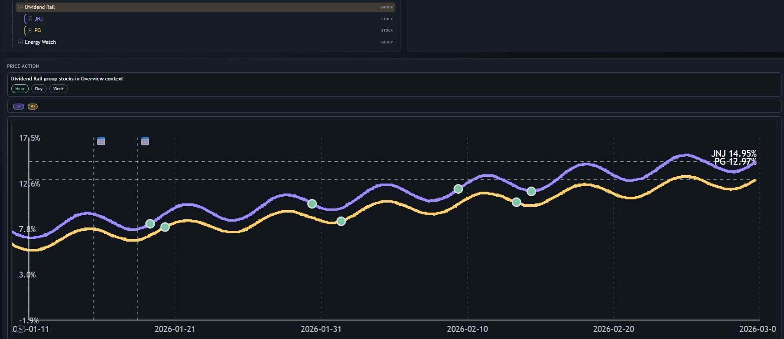

StockTool, Part II: From Prototype to Contract-Driven Evolution
Part 2 of 2
In the first post, we introduced the hierarchy-first portfolio model. This phase was about making it durable: still plain HTML/CSS/JS, still local-first, but now developed through a tighter contract-driven process.
 Shared graph context across views with stronger selection continuity.What Changed
- Contract-first workflow: behaviors live in requirements + acceptance criteria and ship together with implementation updates.
- Focused workspace views: Overview, Alerts, Heat, and Timeline now support different analysis tasks without breaking the core tree model.
- Stronger graphing: reusable graph rendering, transaction markers, timeframe controls, and context-based value modes.
- Better context sync: tree selection now drives detail and graph context more reliably across views.
Why the Process Shift Matters
The biggest upgrade was process, not visual polish. Anchoring behavior as requirement IDs with acceptance scenarios improved clarity, change traceability, and scope control. We now ship in smaller, safer increments instead of patch-heavy bursts.
Current Snapshot
- Stable hierarchy-first domain model
- Modular contract structure for behavior and constraints
- Multi-view UX with stronger interaction continuity
- Minimal-growth guardrails to avoid product bloat
What stayed the same on purpose: no frameworks, no heavy stack, no cloud-first assumptions — just readable code and iterative delivery.
Next
Near-term focus: persistence hardening, cleaner data-provider adapters, graph/selection polish under real usage, and performance tuning as tree/event complexity grows.
StockTool is still intentionally small — now it’s small with structure.